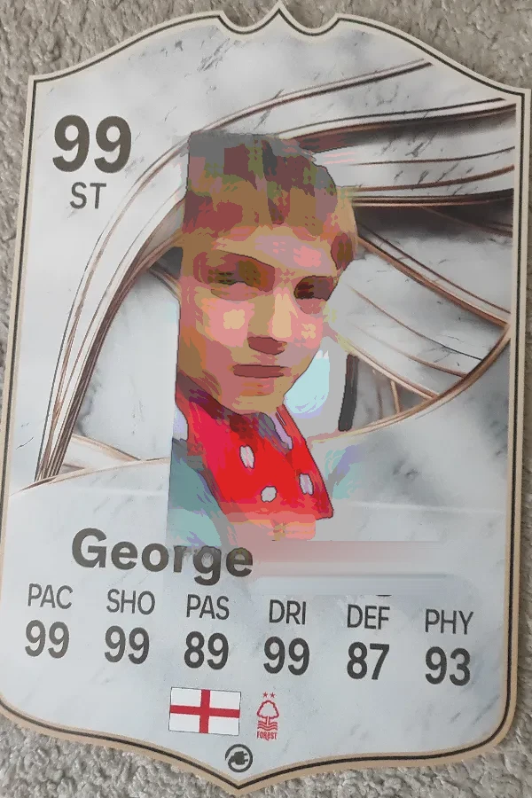

My club
Nottingham Forest
Loading the live table...
How I became a Forest fan:
Matchday
The next match, fixtures, results and Forest in Fantasy Premier League. Everything here updates by itself.
🔴 Match centre · goals, cards and subs as they happen
Loading the next match...
🔮 My prediction tracker
Every guess I make, saved online, and how many points it got me.
Loading predictions...
Loading fixtures...
Loading results...
Loading Fantasy Premier League…
My favourite players
The three I rate most right now. Updates as the season goes on.
My own football

-
Goals this season
-
Appearances